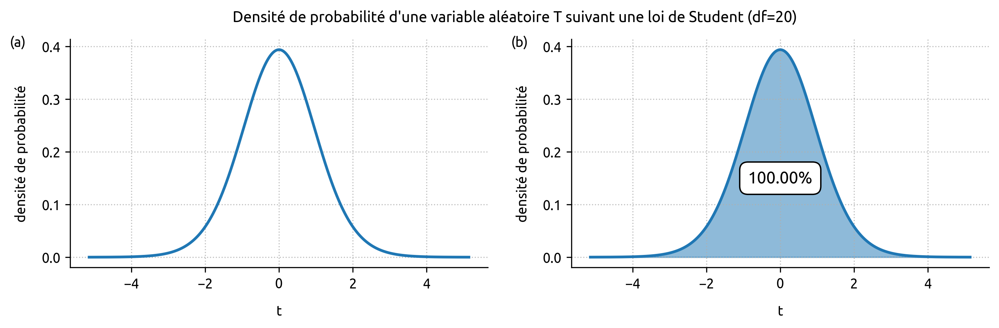
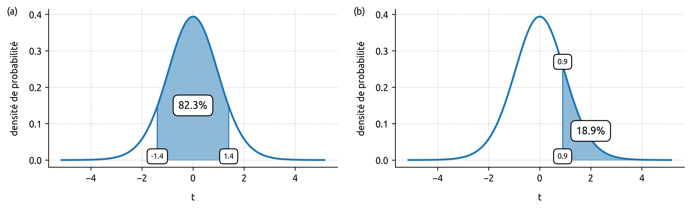
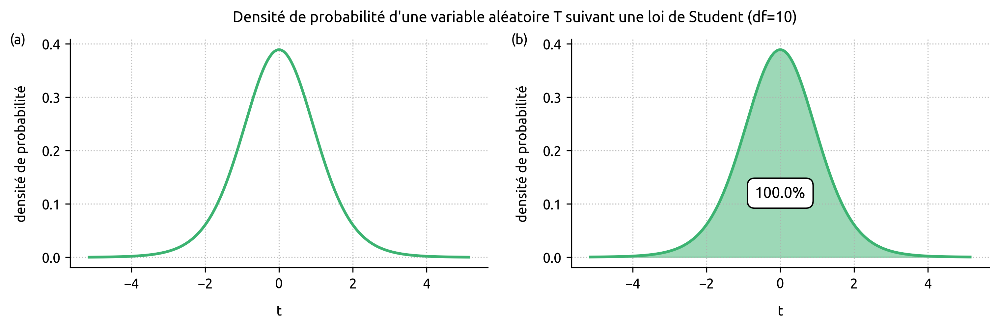
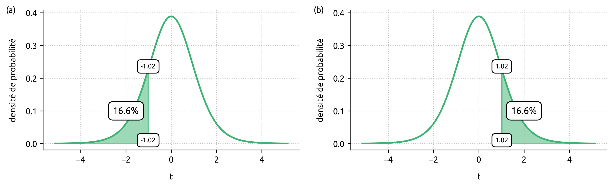
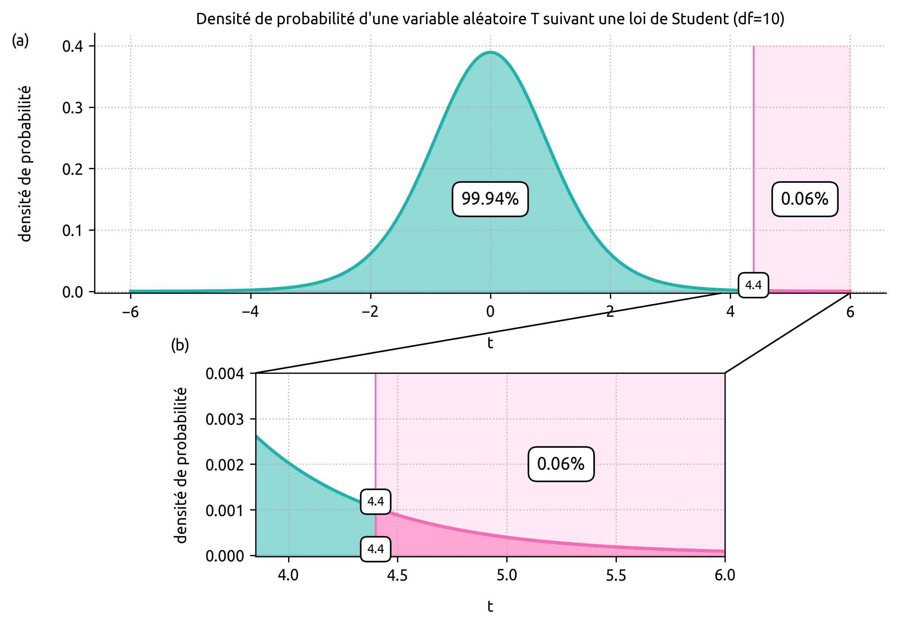
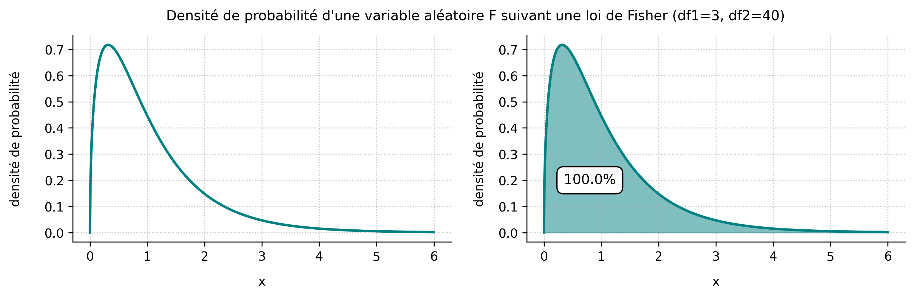
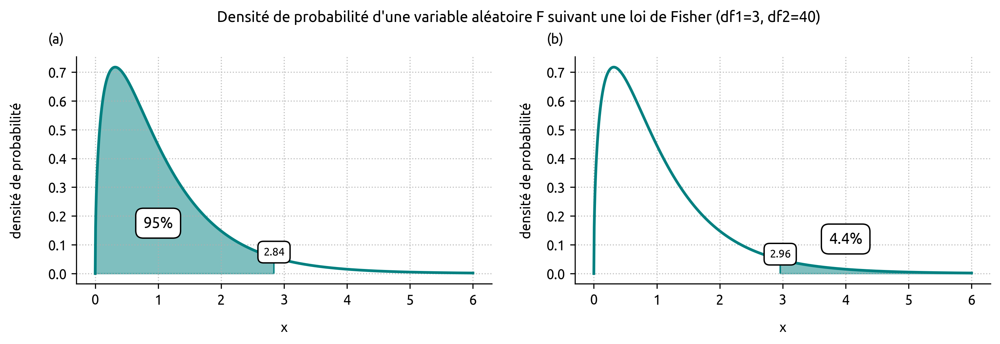

Dans les exemples des précédentes pages, nous avons calculé les p-values « directement », c'est-à-dire comme de simples probabilités conditionnelles. Cela était possible parce que nous connaissions la distribution de la variable aléatoire d'intérêt sous l'hypothèse nulle : on savait à quoi s'attendre en lançant 20 fois une pièce supposée équilibrée, tout comme l'on savait à quoi s'attendre en observant la taille d'un arbre supposé être un chêne.
En sciences expérimentales, et en biologie en particulier, cette situation est rare : lorsqu'on teste une hypothèse, il n'existe généralement pas de distribution de probabilité connue directement associée à la variable étudiée. Et c'est là qu'interviennent les tests statistiques : ils permettent de construire une variable aléatoire représentative de la situation d'intérêt, puis de calculer la p-value exactement comme on l'a fait précédemment.
La statistique : résumer une comparaison en un seul nombre
Encore une histoire de taille
Le mardi 30 juin 2026, lors de la Coupe du monde de football, la France a affronté la Suède en 1/16e de finale à New York. Imaginons que l'on veuille savoir si les joueurs de l'équipe de Suède sont, en moyenne, plus grands que ceux de l'équipe de France. Notre hypothèse nulle $H_0$, le monde par défaut, serait alors de considérer qu'il n'y a pas de différence de taille moyenne entre les joueurs de l'équipe de France et ceux de l'équipe de Suède : les deux moyennes seraient globalement les mêmes. Pour savoir si les suédois sont plus grands que les français, il nous suffirait alors de mesurer la taille moyenne des deux équipes, puis d'observer la différence entre ces moyennes (c'est notre variable aléatoire, c'est-à-dire la quantité qui nous intéresse dans cette expérience), et enfin de calculer la p-value associée : la probabilité d'observer une différence au moins aussi extrême que celle observée, en supposant $H_0$ vraie (les moyennes sont identiques). Facile non ?
Un problème se pose alors : comment traduire mathématiquement « H0 vraie », autrement dit comment retranscrire le fait que les deux équipes aient la même taille moyenne ? À quoi devons-nous nous attendre si les deux équipes ont vraiment la même taille moyenne ? Et surtout : quelle est la distribution de probabilité de la variable aléatoire représentant la différence des tailles moyennes ?
Notons $\subse{\bar{x}}$ la taille moyenne (en cm.) des 11 titulaires suédois qui ont commencé le match et $\subfr{\bar{x}}$ la taille moyenne (en cm.) des 11 titulaires français qui ont débuté le match. Dans notre expérience, puisque nous nous intéressons à la différence des moyennes, on peut introduire la variable aléatoire $D \coloneqq \subse{\bar{x}} - \subfr{\bar{x}}$. Si les moyennes étaient strictement identiques, on aurait $D = 0$. Mais si on obtient $D = 0{,}3$, cela signifie que la différence des moyennes observée est de 0,3 mm en faveur des suédois. Les joueurs suédois sont-ils alors vraiment plus grands que les français ? À partir de quand peut-on conclure quelque chose ? Quelle est la différence seuil qui nous permettrait de basculer de $H_0$ (les deux équipes mesurent la même taille) vers $H_1$ (les joueurs suédois sont plus grands que les français) ? Une différence de 0,2 mm est-elle suffisante pour déclarer les suédois plus grands ? Ou alors faut-il au minimum 5 cm ?
Dans la réalité, le problème qu'on cherche à résoudre est de savoir si la valeur de $D$ observée ($D_{observée}$) a un sens concret : si cette différence observée est pertinente ou bien négligeable ? En statistiques, on dit qu'on cherche à savoir si la différence est significative, c'est-à-dire si elle est suffisamment grande pour ne pas être due au simple hasard.
En fait, le calcul de la p-value étant objectif mais la conclusion qu'on en tire étant subjective (le choix du seuil de 5%), on pourrait très bien construire une nouvelle théorie alternative, elle aussi basée sur un seuil subjectif. Je pourrais très bien décider (avant de faire l'expérience) : « je considère qu'une différence d'au moins 2 cm est significative, et qu'elle me permettra de conclure que les suédois sont plus grands, le cas échéant » (on bascule de $H_0$ vers $H_1$). À l'inverse, si j'observe une différence inférieure à 2 cm, je considèrerai que c'est négligeable, et j'aurai le droit de conclure que la différence n'est pas significative : les suédois ne sont pas franchement plus grands que les français (non-rejet de $H_0$).
Les conclusions qu'on tirera seront « vraies » dans cette théorie. Et on peut construire n'importe quelle théorie alternative : par exemple, décider que la différence doit être supérieure au rayon d'un ballon de foot (~11 cm) pour basculer de $H_0$ vers $H_1$. Si on observe 8 cm d'écart, on aura alors le droit de considérer que cette différence n'est pas significative — dans notre théorie. Ces théories ne sont ni fausses ni vraies : ce sont juste des règles simples qu'on se donne pour tirer des conclusions. Si les sciences expérimentales fonctionnaient comme ça, chacun choisirait le seuil qui l'arrange, et plus rien n'aurait de sens. Pour trancher une bonne fois pour toutes si les joueurs suédois sont plus grands que les français, il nous faut utiliser une théorie reconnue par l'ensemble du monde académique... la théorie de la p-value.
Pour calculer la p-value dans les règles de l'art, il nous faut connaitre la distribution de probabilité de la variable aléatoire représentative de la situation étudiée (différence des moyennes). Commençons par regarder les données de plus près :
L'équipe de France mesure en moyenne 183,2 cm, tandis que l'équipe de Suède mesure en moyenne 185,6 cm. Les joueurs suédois sont donc plus grands que les joueurs français. La question à se poser est de savoir si cette différence est significative ? Est-ce que ces 2,4 cm d'écart suffisent à conclure que les footballeurs suédois sont réellement plus grands que les français ?
Reprenons notre variable aléatoire $D \coloneqq \subse{\bar{x}} - \subfr{\bar{x}}$. Ici, on a donc $D_{observé} = 185{,}6 - 183{,}2 = 2{,}4$. Si on prend comme point de bascule de $H_0$ vers $H_1$ le seuil 2 cm, la différence est significative car 2,4 > 2 mais si on prend comme seuil le rayon du ballon, la différence n'est plus significative puisque 2,4 < 11. Soyons plus rigoureux et utilisons les méthodes conventionnelles.
Pour tester si cette différence est significative en utilisant la théorie de la p-value, il nous faut créer une variable aléatoire $X$ qui représente la situation (la différence moyenne des tailles) et dont la distribution de probabilité est connue. Puis, il nous suffit de regarder quelle est la probabilité d'observer une telle différence — ou une différence encore plus grande — si les tailles des deux équipes étaient réellement identiques ($H_0$ vraie). Cela revient à calculer : $\mathbb{P}(X \geq X_{observé} \mid H_0 \text{ vraie})$, ce qui est la définition de la p-value.
Le test t de Student
Reprenons notre variable aléatoire $D$ que l'on renomme $T$ : $$T = \subse{\bar{x}} - \subfr{\bar{x}}$$ Certes $T$ représente bien la situation étudiée puisqu'elle caractérise correctement la différence des moyennes, mais on ne connait pas sa distribution de probabilité. Impossible donc de calculer une p-value.
Modifions alors $T$ de telle sorte que : $$T = \dfrac{\subse{\bar{x}} - \subfr{\bar{x}}}{s_p \cdot \sqrt{\dfrac{1}{\subse{n}} + \dfrac{1}{\subfr{n}}}}$$ où $\subse{n}$ est le nombre de joueurs du groupe Suède, $\subfr{n}$ le nombre de joueurs du groupe France et $s_p$ est l'écart-type combiné des deux groupes :
$$s_p = \sqrt{\dfrac{(\subse{n}-1) \cdot \subse{s}^2 + (\subfr{n}-1)\,\subfr{s}^2}{\subse{n} + \subfr{n} - 2}}$$
Contrairement à la simple différence des moyennes ($\subse{\bar{x}} - \subfr{\bar{x}}$), cette nouvelle variable aléatoire $T$ a un avantage précieux : sous $H_0$ (c'est-à-dire si les deux groupes ont vraiment la même moyenne), on peut démontrer que $T$ suit une loi de Student de paramètre $\subse{n} + \subfr{n} - 2$. Techniquement, ce paramètre décrit les degrés de liberté de la densité de probabilité, et ici $T$ suit par conséquent une loi de Student à 11 + 11 - 2 = 20 degrés de liberté. Ici donc, on sait maintenant à quoi s'attendre lorsque $H_0$ est vraie : on pourra donc évaluer si un résultat observé est conforme à notre hypothèse, ou bien s'il est extraordinaire.
Autrement dit, en divisant l'écart des moyennes par une estimation de la variabilité naturelle des données (via $s_p$), on transforme un nombre dont on ignorait la distribution en une variable aléatoire dont la distribution est parfaitement connue ! La variable aléatoire que nous venons de construire est appelé statistique de Student. C'est précisément cette construction qui permettra de calculer notre p-value avec les méthodes usuelles.

La figure 1 désigne la densité de probabilité de la variable aléatoire $T$ construite plus haut, lorsque $H_0$ est vraie. Pour calculer la probabilité que $T$ tombe dans un certain intervalle donné sachant que les deux équipes ont la même taille moyenne, il nous suffit alors d'évaluer l'aire sous la courbe de la densité entre les deux bornes considérées (Figure 2).

Ainsi, si on suppose que les deux équipes ont la même taille moyenne, la probabilité d'observer une valeur de $T$ comprise entre -1,4 et 1,4 (Figure 2a) est de 82,3% : cela signifie que, même si les deux équipes étaient réellement identiques en taille, il serait tout à fait courant d'observer, par simple hasard d'échantillonnage ou par chance, un écart comme celui-ci.
Dans notre exemple avec les joueurs français et suédois, on obtient : $$T_{observé} = \dfrac{185{,}6 - 183{,}2}{\sqrt{\dfrac{(11 -1) \cdot 7^2 + (11 -1) \cdot 5{,}4^2}{11 + 11 - 2}} \cdot \sqrt{\dfrac{1}{11} + \dfrac{1}{11}}} = 0{,}9$$
Pour calculer la p-value et conclure si la différence de 2,4 cm entre les deux équipes est significative ou non, il nous suffit d'appliquer la définition de la p-value et de calculer $\mathbb{P}(T \geq 0{,}9 \mid H_0 \text{ vraie})$. Étant donné que $T$ suit une loi de Student à 20 degrés de liberté sous $H_0$ (lorsque $H_0$ est vraie), nous pouvons évaluer cette quantité directement à l'aide de la Figure 2b : $$\mathbb{P}(T \geq 0{,}9 \mid H_0 \text{ vraie}) = 0{,}189 \gt 0.05$$
Étant donné que 0,189 > 0.05 (18,9% > 5%), nous n'avons pas recueilli suffisamment de preuves pour pouvoir basculer vers $H_1$ et conclure que les joueurs suédois sont plus grands que les français. Si les deux équipes avaient la même taille moyenne, nous avions 18,9% de chances d'observer ce résultat — ou un résultat aussi extrême. Le seuil des 5% n'est pas atteint et $H_0$ ne peut ainsi pas être rejetée : la différence de 2,4 cm en faveur de l'équipe de Suède n'est pas significative. Nous ne pouvons pas affirmer que les Blågult sont plus grands que les Bleus.
Quelques notes
Lorsqu'on applique le raisonnement ci-dessus, on dit qu'on fait un test t de Student, ce qui revient à calculer la valeur de la statistique t de Student à partir des données, puis d'évaluer l'aire sous la densité associée entre la valeur calculée et + ∞.
Comme on l'a vu tout au long de notre voyage, il est faux d'affirmer que, au vu des données et de la différence des moyennes, il y a 18,9% de chances pour que les deux équipes mesurent réellement la même taille.
Lors d'un test statistique effectué avec un logiciel spécialisé, la plupart des scientifiques s'intéressent uniquement à la p-value ; mais les logiciels fournissent aussi la valeur de la statistique de test. Il peut parfois être intéressant d'y prêter un peu plus d'attention étant donné que c'est cette statistique qui condense les données et qui permet de calculer la fameuse p-value.
Enfin, pour que le raisonnement soit rigoureusement juste et surtout pour que la variable aléatoire $T$ suive réellement une loi de Student lorsque $H_0$ est vraie, il faut que les distributions des deux groupes que l'on compare soient approximativement normales et que leurs variances soient homogènes (homoscédasticité), ce qui avait bien été vérifié de mon côté avant d'appliquer le raisonnement, mais ceci est une autre histoire...
Le test t de Student pour échantillons appariés
Dans l'exemple précédent, nous avons procédé à un test t de Student pour échantillons indépendants, c'est-à-dire que l'on a comparé les deux moyennes sans tenir compte des potentielles différences individuelles entre joueurs. Certains joueurs français sont plus grands que certains suédois, et vice-versa, mais globalement l'équipe de Suède est plus grande de 2,4 cm (même si cette différence n'est pas significative). Mais imaginons maintenant un scénario différent : et si chaque joueur suédois était exactement 2,4 cm plus grand que son homologue français ? En moyenne, l'écart entre les deux équipes serait toujours de 2,4 cm... mais on sent bien que ce 2,4 cm-là est beaucoup plus convaincant que le premier, n'est-ce pas ? Dans ce cas, il n'y a potentiellement plus de hasard individuel qui brouille les pistes : la différence est la même partout, tout le temps.
Lorsque l'on veut faire une comparaison individu par individu (observation par observation) plutôt que globalement — comme dans notre scénario où chaque joueur suédois est comparé à son homologue français — on peut procéder à une variante du test t de Student appelée test t de Student pour échantillons appariés. Pour cela, il faut deux conditions : avoir le même nombre d'observations dans chaque groupe, et pouvoir former des paires qui ont un sens (par exemple, un joueur suédois et un joueur français jouant au même poste, ou des mesures effectuées sur une même personne avant et après un traitement).
Le tableau 2 indique les paires créées entre les joueurs des deux équipes. Par soucis de simplicité, nous avons supposé que les deux équipes avaient exactement la même composition (4-2-3-1) de sorte à pouvoir relier deux joueurs partageant exactement le même poste. Ainsi, chaque joueur français peut être apparié à son « homologue; » suédois.
Lors d'un test t de Student pour échantillons appariés, il faudra toujours s'intéresser à la différence des tailles (ou de n'importe quelle autre mesure) pour chaque paire créée (Tableau 3). Maintenant, le jeu de données peut être représenté à l'aide d'une seule série de valeurs. Contrairement au test t pour échantillons indépendants de la partie précédente, ici nous avons calculé les différences France - Suède (et non Suède - France), mais l'ordre de l'opération n'a aucune importance : la loi de Student est symétrique par rapport à 0. Les calculs peuvent être faits dans n'importe quel sens, les résultats seront identiques.
En appariant les joueurs de cette façon, on trouve une différence moyenne de -2,4 cm en faveur des joueurs français (en fait, n'importe quel appariement donnera cette moyenne). Autrement dit, les français sont plus petits que les suédois de 2,4, cm en moyenne. L'information est bien la même que celle que nous avions obtenue dans le test précédent en calculant d'abord la moyenne des joueurs suédois ($\subse{\bar{x}}$), soustraite à celle des français ($\subfr{\bar{x}}$).
Une fois les paires créées, le reste du raisonnement est identique à un test t pour échantillons indépendants, à la différence de la statistique de test. Pour un test t de Student pour échantillons appariés, la variable aléatoire utilisée est : $$T = \sqrt{n} \cdot \dfrac{\bar{d}}{s_d}$$ où $\sqrt{n}$ est le nombre de paires créées, $\bar{d}$ la moyenne des différences et $s_d$ l'écart-type des différences.
Encore une fois, il se trouve que cette variable aléatoire possède un avantage précieux : lorsque $H_0$ est vraie, $T$ soit une loi de Student à $n-1$ degrés de liberté. Cela signifie que l'on sait à quoi s'attendre si $H_0$ est vraie, et on pourra ainsi décider si un résultat observé est ordinaire ou bien extraordinaire. Dans notre exemple, étant donné que nous avons 11 paires de joueurs, $T$ suit alors une loi de Student à 10 degrés de liberté (Figure 3).

Dans notre exemple avec les joueurs français et suédois appariés, on obtient : $$T_{observé} = \sqrt{11} \cdot \dfrac{-2{,}4}{7{,}8} = -1{,}02$$
Pour calculer la p-value et conclure si la différence de 2,4 cm entre les deux équipes (échantillons appariés) est significative ou non, il nous suffit d'appliquer la définition de la p-value et de calculer $\mathbb{P}(T \leq - 1{,}02 \mid H_0 \text{ vraie})$. Comme $T$ suit une loi de Student à 10 degrés de liberté sous $H_0$ (c'est-à-dire lorsque $H_0$ est vraie), on peut aisément calculer cette probabilité en évaluant directement l'aire sous la courbe de densité associée, entre les bornes - ∞ et -1,02. Dans cet exemple, la statistique de test observée ($T_{observé}$) est négative (T = - 1,02). Obtenir « une valeur au moins aussi extrême » revient donc à regarde du côté gauche de la courbe : en effet, les valeurs au moins aussi extrêmes que -1,02 celles qui sont encore plus petites (donc encore plus négatives).

L'aire qui nous intéresse donne $\mathbb{P}(T \leq -1{,}02 \mid H_0 \text{ vraie}) = 0{,}166$. Ainsi, dans cette expérience p = 0,166 (Figure 4a).
Étant donné que 0,166 > 0,05 (16,6% > 5%), nous n'avons pas recueilli suffisamment de preuves pour pouvoir basculer vers $H_1$ et conclure que les joueurs suédois sont plus grands que les français (échantillons appariés). Si les deux équipes avaient la même taille moyenne, nous avions 16,6% de chances d'observer ce résultat — ou un résultat aussi extrême. Le seuil des 5% n'est pas franchi et $H_0$ ne peut ainsi pas être rejetée : la différence de 2,4 cm en faveur de l'équipe de Suède n'est pas significative. Nous ne pouvons pas affirmer que les Blågult sont plus grands que les Bleus, même en prenant en compte les différences individuelles.
À noter ici la symétrie de la loi de Student (peu importe le nombre de degrés de liberté) : si nous avions calculé les différences Suède - France au lieu de France - Suède, nous aurions trouvé une différence moyenne égale à + 2,4 (comme dans le premier test), la statistique de test aurait été égale à + 1,02 et la p-value aurait été la probabilité $\mathbb{P}(T \geq 1{,}02 \mid H_0 \text{ vraie})$. Comme la loi de Student est symétrique par rapport à 0, on a bien $\mathbb{P}(T \geq 1{,}02 \mid H_0 \text{ vraie}) = \mathbb{P}(T \leq -1{,}02 \mid H_0 \text{ vraie}) = 0{,}166$. Cette égalité peut se vérifier mathématiquement mais surtout visuellement (Figure 4b).
Une autre variante du test t de Student
Je ne pouvais pas terminer cette partie sans vous parler de la troisième et dernière version du test t de Student. Rassurez-vous, c'est la plus simple : pour l'utiliser, il nous suffit d'un seul échantillon... Je vous présente le test t de Student à un échantillon.
Ce test sert à déterminer si la moyenne d'un échantillon donné est « conforme » à une moyenne de référence. N'y allons pas par quatre chemins : utilisons tout de suite ce test pour savoir si la taille moyenne des 11 footballeurs français alignés face à la Suède le 30 juin 2026 (moyenne = 183,2 ± 5,4 cm) est « égale » à la taille moyenne de la population masculine française, supposée être de 176 ± 7 cm. Nous allons donc tester si la taille moyenne des footballeurs français est « conforme » à celle des hommes français ($H_0$), ou si au contraire les footballeurs sont, en moyenne, plus grands ($H_1$).
La statistique de test est : $$T = \sqrt{\subfr{n}} \cdot \dfrac{\subfr{\bar{x}} - \mu_0}{\subfr{s}}$$ où $\subfr{n}$ est le nombre de joueurs (d'observations) de l'échantillon, $\subfr{\bar{x}}$ la moyenne de l'échantillon, $\mu_0$ la moyenne de référence et $\subfr{s}$ l'écart-type de l'échantillon.
Comme les choses sont décidément bien faites, il se trouve que sous $H_0$ (lorsque $H_0$ est vraie, c'est-à-dire si les footballeurs et la population masculine française ont vraiment la « même » taille moyenne), la variable aléatoire $T$ construite juste au dessus suit précisément une loi de... Student (quelle surprise!) à n - 1 degrés de liberté. Dans notre situation : 10 degrés de liberté.
Des calculs nous donnent : $$T_{observé} = \sqrt{11} \cdot \dfrac{183{,}2 - 176}{5{,}4} = 4{,}4$$
Pour savoir si la différence est statistiquement significative, il nous suffit de calculer (je suis sûr que vous l'avez!) : $$\mathbb{P}(T \geq 4{,}4 \mid H_0 \text{ vraie})$$Ce qui revient à évaluer l'aire sous la courbe de densité d'une loi de Student à 10 degrés de liberté, entre 4,4 et + ∞. Visuellement, on peut déjà sentir que cette aire, et donc la p-value qui lui est associée, est très petite (Figure 5).

Dans notre situation, on obtient $\mathbb{P}(T \geq 4{,}4 \mid H_0 \text{ vraie}) = 0{,}06\%$. Ainsi p = 0,0006 (Figure 5a, 5b). Le seuil de 5% (0,05) est largement atteint : nous avons amassé suffisamment de preuves pour pouvoir basculer dans le monde de $H_1$ : on peut raisonnablement conclure que les 11 footballeurs français sont, en moyenne, plus grands que les hommes français.
ANOVA : un test statistique pour comparer les moyennes de $k$ échantillons
ANOVA à un facteur : une seule condition qui différentie les échantillons
Les tests de Student (les fameux « t-tests ») requièrent au moins un échantillon, et au plus deux, pour pouvoir être mis en place. Ils sont parfaits pour comparer les moyennes de deux échantillons entre elles (p.ex. tailles moyennes de deux équipes, effet de deux traitements) ou pour comparer la moyenne d'un seul échantillon à une moyenne de référence connue (par exemple, la taille moyenne d'une équipe par rapport à une norme établie). Mais que faire quand on veut comparer les moyennes de trois groupes ou plus en même temps ?
Prenons justement le cas de quatre groupes (appelons-les A, B, C et D) : il existe exactement 6 comparaisons possibles deux à deux : A-B, A-C, A-D, B-C, B-D et C-D. On pourrait alors être tenté de faire six tests de Student à la suite, un pour comparer les deux moyennes de chaque paire. En fait, procéder ainsi est une (très) mauvaise idée. Le problème, c'est que chaque test statistique comporte un petit risque de se tromper : conclure qu'il existe une différence réelle entre deux groupes... alors qu'en réalité, il n'y en a pas. C'est ce qu'on appelle un faux positif (voir section « Introduction à la p-value » ; paragraphe Le risque de première espèce). Ce risque est généralement fixé à 5 % par test (le fameux seuil 0,05). Et si on fait des tests de Student en série, ce risque de 5 % s'accumule à chaque nouveau test qu'on réalise. Un peu comme au loto : plus on achète de tickets, plus on a de chances qu'au moins l'un d'entre eux soit gagnant... même si chaque ticket, pris individuellement, a très peu de chances de l'être. C'est la même chose avec les tests t en série : le risque global de se tromper augmente au fur et à mesure qu'on réalise et augmente le nombre de tests — mais ceci est une autre histoire...
Ce qu'il faut retenir : lorsque l'on compare les moyennes de 3 groupes ou plus, le test de Student ne s'applique plus. Il faut utiliser un test ANOVA. La procédure est exactement la même qu'avec n'importe quelle variante du test de Student : on construit une statistique de test (une variable aléatoire), de telle sorte qu'elle suive une certaine loi de probabilité connue lorsque $H_0$ est vraie, puis on calcule la p-value comme étant la probabilité d'obtenir une valeur au moins aussi extrême que celle observée, sous l'hypothèse que $H_0$ est vraie.
Rentrons dans le vif du sujet et restons branchés foot (oui j'écris cet article pendant la coupe du monde). Considérons toujours l'équipe de France et l'équipe de Suède, et ajoutons-y la Norvège et l'équipe du Cap-Vert. La question à laquelle un test ANOVA permet de répondre est : parmi ces 4 équipes, y en a-t-il au moins une qui se démarque des autres par sa taille moyenne ? Formellement, on pose les deux hypothèses suivantes :
$H_0 : \subfr{\bar{x}} = \subse{\bar{x}} = \subno{\bar{x}} = \subcv{\bar{x}}$
$H_1 : $ au moins une équipe a une taille moyenne différente des autres
Notez bien que $H_1$ ne dit pas laquelle des quatre équipes se démarque, ni même s'il n'y en a qu'une seule — elle dit juste qu'on ne peut pas les considérer toutes comme identiques. C'est là toute la limite (et la force) de l'ANOVA : elle détecte qu'il y a un problème, sans nous dire d'où il vient. Pour ça, il faudra une étape supplémentaire, qu'on abordera plus loin.
Dans notre situation, nous avons 4 échantillons représantant les 4 équipes (ainsi $k = 4$) et 44 observations au total (11 joueurs par équipe ; $N \coloneqq \subfr{n} + \subse{n} + \subno{n} + \subcv{n} = 44$ observations). Voici à quoi ressemblent les données de nos 4 équipes :
La variable aléatoire (statistique de test) que nous devons construire pour représenter la situation (comparaison des moyennes de 4 échantillons) est un peu plus compliquée que celle d'un test de Student.
Commençons par calculer la moyenne générale (la moyenne des moyennes) : $$ \begin{aligned} \bar{x} &= \dfrac{\subfr{\bar{x}} + \subse{\bar{x}} + \subno{\bar{x}} + \subcv{\bar{x}}}{4} \\[1em] &= \dfrac{183{,}2 + 185{,}6 + 188{,}1 + 180{,}5}{4} \\[1em] &= 184{,}4 \end{aligned}$$
Nous avons également besoin de calculer la somme des carrés inter-groupes, notée $\subsub{SCE}{inter}$. Derrière ce terme un peu barbare, se cache en fait une simple addition. Concrètement, pour chaque équipe, on calcule l'écart entre sa moyenne et la moyenne générale, on met cet écart au carré, puis on le pondère par le nombre d'observations de l'équipe (pour donner plus de poids aux équipes où l'on a mesuré plus de joueurs). On additionne ensuite ces quatre valeurs pour obtenir la somme des carrés inter-groupes, qui représente à quel point les 4 moyennes sont proches ou éloignées les unes des autres. Si les 4 moyennes étaient identiques, cette quantité vaudrait $0$ : $$ \begin{aligned} \subsub{SCE}{inter} &= \subfr{n} \cdot (\subfr{\bar{x}} - \bar{x})^2 + \subse{n} \cdot (\subse{\bar{x}} - \bar{x})^2 + \subno{n} \cdot (\subno{\bar{x}} - \bar{x})^2 +\subcv{n} \cdot (\subcv{\bar{x}} - \bar{x})^2 \\[1em] &= 11 \cdot (183{,}2 - 184{,}4)^2 + 11 \cdot (185{,}6 - 184{,}4)^2 + 11 \cdot (188{,}1 - 184{,}4)^2 + 11 \cdot (180{,}5 - 184{,}4)^2 \\[1em] &= 11 \cdot (-1{,}2)^2 + 11 \cdot (1{,}2)^2 + 11 \cdot (3{,}7)^2 + 11 \cdot (-3{,}9)^2 \\[1em] &= 349{,}6 \end{aligned}$$ Dans les livres de statistiques ou sur des articles internet, vous pourriez rencontrer la forme condensée : $$\subsub{SCE}{inter} = \sum_{i=1}^{k} n_i (\bar{x}_i - \bar{x})^2$$
Nous devons aussi calculer la somme des variances de tous les échantillons, pondérée par le nombre d'observations dans chaque groupe (auquel on retranche 1). On appelle cette quantité somme des carrés intra-groupes, notée $\subsub{SCE}{intra}$, qui représente à quel point les observations de chaque groupe sont dispersées autour de la moyenne du groupe. Si, à l'intérieur de chacun des groupes, toutes les observations étaient égales entre elles, cette quantité vaudrait $0$ : $$ \begin{aligned} \subsub{SCE}{intra} &= (\subfr{n} -1) \cdot \subfr{s}^2 + (\subse{n} -1) \cdot \subse{s}^2 + (\subno{n} -1) \cdot \subno{s}^2 + (\subcv{n} -1) \cdot \subcv{s}^2\\[1em] &= (11 - 1) \cdot 28{,}8 + (11 - 1) \cdot 49{,}1 + (11 - 1) \cdot 58{,}5 + (11 - 1) \cdot 21{,}3 \\[1em] &= 10 \cdot 28{,}8 + 10 \cdot 49{,}1 + 10 \cdot 58{,}5 + 10 \cdot 21{,}3 \\[1em] &= 288 + 491 + 585 + 213 \\[1em] &= 1577 \end{aligned}$$ Dans les livres de statistiques ou sur des articles internet, vous pourriez rencontrer la forme condensée : $$\subsub{SCE}{intra} = \sum_{i=1}^{k} (n_i - 1)\, s_i^2$$ ou de façon équivalente : $$\subsub{SCE}{intra} = \sum_{i=1}^{k} \sum_{j=1}^{n_i} (x_{ij} - \bar{x}_i)^2$$
En divisant la somme des carrés inter-groupes ($\subsub{SCE}{inter}$) par le nombre de groupes moins 1 (soit $k - 1$), on obtient le carré moyen inter-groupes ($\subsub{CM}{inter}$). En divisant la somme des carrés intra-groupes ($\subsub{SCE}{intra}$) par le nombre total d'observations moins le nombre de groupes (soit $N - k$), on obtient le carré moyen intra-groupes ($\subsub{CM}{intra}$). En faisant le rapport de ces deux carrés moyens, on obtient une variable aléatoire $F$ s'écrivant : $$F = \dfrac{\subsub{SCE}{inter} / (k -1)}{\subsub{SCE}{intra} / (N -k)} = \dfrac{\subsub{CM}{inter}}{\subsub{CM}{intra}}$$ et qui suit une loi de Fisher de paramètres $(k - 1,\ N - k)$. Les deux paramètres sont appelés degrés de liberté. Dans notre cas, $F$ s'écrit $$F = \dfrac{\subsub{SCE}{inter} / 3}{\subsub{SCE}{intra} / 40} = \dfrac{\subsub{CM}{inter}}{\subsub{CM}{intra}}$$ et suit une loi de Fisher à 3 et 40 degrés de liberté, lorsque $H_0$ est vraie. Ainsi, quand $H_0$ est vraie, on peut facilement calculer (aire sous la courbe de densité associée) la probabilité que $F$ prenne une valeur supérieure à celle qu'on aura observée, qui est précisément la définition de la p-value (ouf, c'est gagné !).

La figure 6 décrit la densité de probabilité liée à la variable aléatoire $F$ lorsque $H_0$ est vraie — autrement dit, elle nous donne, pour n'importe quel intervalle de [0, + ∞[, la probabilité que $F$ s'y trouve lorsque $H_0$ est vraie, c'est-à-dire lorsque les 4 moyennes sont « identiques » (les différences ne sont pas statistiquement significatives). Fait intéressant : la distribution n'est pas symétrique et n'est jamais négative à cause (ou grâce) aux carrés des formules ; les quantités $\subsub{CM}{inter}$ et $\subsub{CM}{intra}$ sont donc toujours positives, et $F$, qui n'est autre que le rapport des deux, hérite aussi de cette propriété.
Dans notre expérience, on obtient : $$F_{\text{observée}} = \dfrac{349{,}6 / 3}{1577 / 40} = \dfrac{116{,}5}{39{,}4} = 2{,}96$$
2,96 est donc le nombre qui caractérise tout notre jeu de données : il condense à lui tout seul les 44 observations en une seule quantité, qui obéit à des règles clairement définies. Pour savoir si au moins une équipe diffère significativement des autres en matière de taille moyenne des joueurs qui la composent, il ne nous reste plus qu'à calculer (je suis sûr que vous l'avez deviné!) : $$\mathbb{P}(F \geq 2{,}96 \mid H_0 \text{ vraie})$$

Si les 4 équipes de foot ont des tailles moyennes égales (c'est-à-dire qu'aucune n'est significativement plus grande ou plus petite que les autres), il y a 95% de chances que notre variable aléatoire $F$ soit comprise entre 0 et 2,84 (Figure 7a).
Or, d'après la figure 7b, on obtient $\mathbb{P}(F \geq 2{,}96 \mid H_0 \text{ vraie}) = 4{,}44 \%$. Ainsi, pour cette expérience avec ces conditions particulières, p = 0,044 < 0,05 (4,44% < 5%). Cela signifie que, s'il n'y avait pas de différence entre les moyennes des 4 équipes, on avait 4,4% de chances d'observer ce résultat ($F = 2{,}96$), ou un aussi extrême. Puisque notre p-value passe sous le seuil des 5%, le niveau de preuves est considéré comme suffisant et on choisit de sortir du monde de $H_0$ pour basculer dans le monde de $H_1$ : on conclut qu'au moins une des 4 équipes a une taille moyenne significativement différente des autres.
Mais laquelle ? L'ANOVA, à elle seule, ne le dit pas — elle nous informe seulement qu'il existe une différence quelque part parmi les 4 équipes. Pour savoir précisément quelle(s) équipe(s) se démarque(nt) des autres, il faudrait pousser l'analyse avec des tests complémentaires, appelés tests post-hoc...